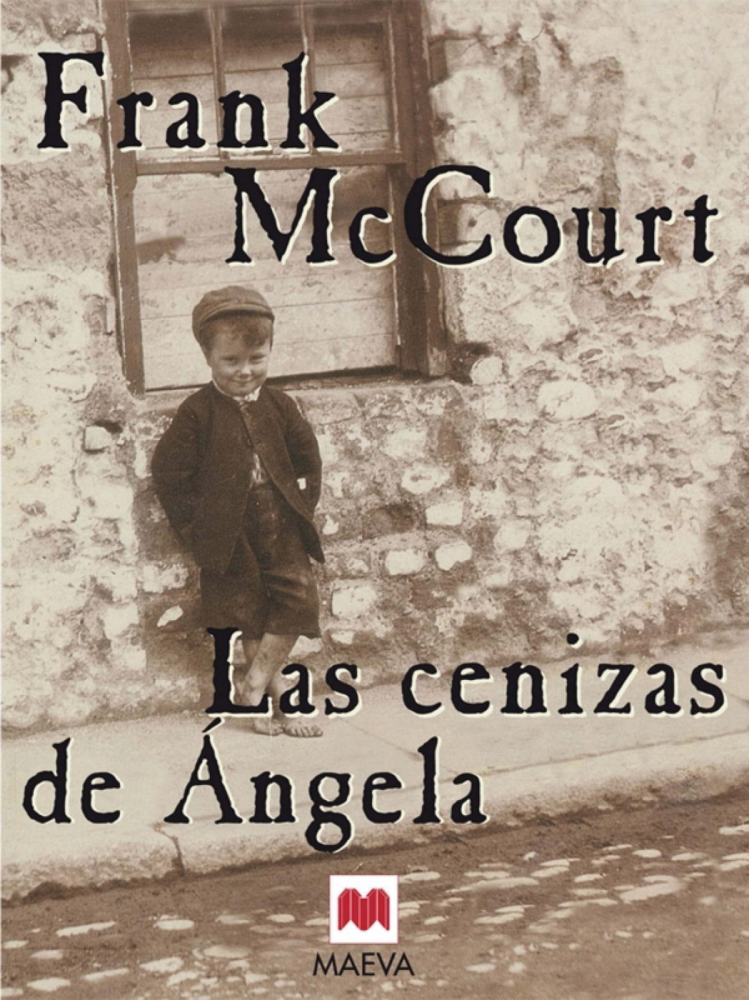

Las cenizas de Ángela
Género: Drama
Autor: Frank McCourt
Año de publicación: 1996
Link de compra: AMAZON
Género: Drama
Autor: Frank McCourt
Año de publicación: 1996
Link de compra: AMAZON
En el conmovedor relato autobiográfico "Las cenizas de Ángela", Frank McCourt nos sumerge en la Irlanda de su infancia con una prosa melódica que evoca tanto la risa como las lágrimas. Esta obra maestra, ganadora del Premio Pulitzer, destila la esencia misma de la experiencia humana, pintando un retrato vivo de la lucha de la familia McCourt contra la adversidad en Limerick.
La narrativa comienza con la muerte prematura de la hermana pequeña de Frank, Ángela, marcando el tono de una historia que oscila entre la tragedia y el ingenio irreverente. En el tejido de las palabras, McCourt captura la cruda realidad de la pobreza, donde el frío y el hambre son constantes compañeros. Su padre, un hombre carismático pero alcohólico, lucha por mantener a su familia a flote, mientras su madre lucha con la carga de criar a sus hijos en circunstancias desesperadas.
La historia se desenvuelve con anécdotas entrañables y humorísticas, creando una mezcla única de ternura y desesperación. McCourt comparte las travesías de su niñez, desde sus primeros recuerdos hasta la difícil transición a la adolescencia. El autor no se limita a describir los eventos; sumerge al lector en la psique de un niño que busca sentido en medio del caos.
"Las cenizas de Ángela" no solo es un testimonio de la lucha irlandesa, sino una celebración de la fuerza humana para encontrar luz en la oscuridad. McCourt, con una honestidad brutal y una vulnerabilidad conmovedora, nos invita a reflexionar sobre la universalidad de la experiencia humana. A medida que las páginas se deslizan, el lector se ve inmerso en un viaje emocional que es al mismo tiempo personal y compartido, resonando con la esencia atemporal de la vida, el amor y la pérdida.